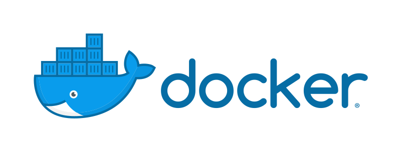
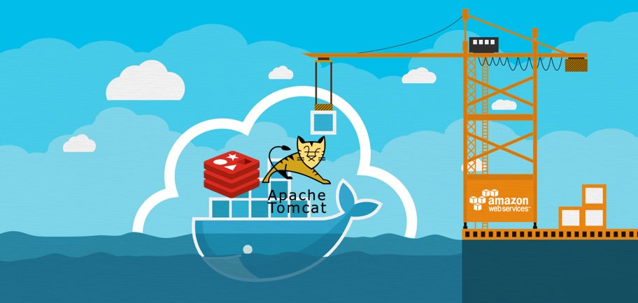

Docker란 무엇인가?

Docker란 Linux 컨테이너(Container) 기반의 오픈소스 가상화 플랫폼 입니다.
위의 Docker 이미지처럼 선박에 화물을 수송하는 이미지를 떠올리면 이해하기가 쉬운데, 실제 선박에는 자동차, 오토바이, 전자제품등 여러 물건을 담을 수 있습니다.
선박에 대한 이미지를 유지한 채, Web Service 운영환경을 생각해 보면…
Web Service 운영환경을 구성하기 위해서는 Web Application이 구동 될 수 있는 WAS와 DataBase가 필요합니다.
이 2가지 프로그램을 Docker라는 선박에 담는다고 생각해 봅시다.
그 다음 우리가 배포할 서버를 항구(Port)라고 생각하고,
각 서버에 Web Service 운영환경을 싣고 있는 선박을 정착 시켜 서버에서 접근가능한 서비스로 이용할 수 있습니다. 따라서 어떤 서버에서도 Docker만 설치되어 있다면, 다양한 프로그램과 실행환경을 추상화 하여 동일한 인터페이스를 제공하고 서버관리를 쉽고 단순하게 만들어 줄 수 있습니다.
Docker에서는 Image와 Container라는 개념을 사용하는데, 이 두 가지 개념에 대해 알아보도록 하겠습니다.
Docker Image

Docker Image는 우리가 사용할 프로그램을 추상화 한 개념입니다.
Image에는 Container 실행에 필요한 파일(redis.conf, redis.log…, docker-entrypoing.sh등)등을 포함하고,
설정값(port, env, data directory등) 정보를 포함하고 있습니다.
1개의 이미지를 바탕으로여러 개의 컨테이너를 만들 수 있습니다.
(ex. 하나의 Redis 이미지를 바탕으로 3개의 Redis Container를 구성하여 Cluster환경을 구성할 수 있습니다.)
이 내용을 좀 더 쉽게 이해하자면, 한번 쯤은 WM에 Linux를 설치 해 본 경험이 있을텐데, Linux를 설치 하기 위해선 linux.iso 파일이 필요 합니다.
이때 iso파일이 Linux를 구성하기 위한 파일과 설정 정보를 담고 있고 VM에 Linux를 설치 할 수 있게 해줍니다.
여기서 iso파일을 Image라고 생각하고, VM위에 설치되는 리눅스를 Container라고 이해 할 수 있겠습니다.
Docker를 이용한 운영 배포 시, 이미지를 Docker Hub라는 곳에 올려 각 서버에서 받아 사용할 수 있습니다.
(Docker Hub는 github나 maven repository 같은 클라우드 저장소 같은 개념으로 이해 하시면 됩니다.)
Docker Container
Container란, 프로그램의 실행에 필요한 실행환경을 독립적으로 운용할 수 있도록, 다른 실행환경과의 간섭을 막고 독립성을 확보해 주는 운영체제 수준의 격리 기술을 의미합니다.
이러한 격리된 환경이 필요한 경우를 생각해 볼 수 있는데, 극단적인 예시로 Java 1.6 환경에서만 실행되는 프로그램과 Java 1.8이상 환경에서만 실행 되는 프로그램을 하나의 서버에 설치한다고 가정하겠습니다.
프로그램이 실행 되기 위해서는 운영체제에 설치 된 라이브러리의 대해 의존성을 가질 수 밖에 없는데, 하나의 OS에서 Java Version에 대한 격리 환경을 가지게 하는 것은 상당히 번거로운 일입니다.
이러한 경우 Docker를 사용하면 격리된 구역에서 실행 환경을 만들어 줄 수 있기 때문에 타 시스템에 영향을 주지 않고 안정적으로 운영환경을 구성 할 수 있습니다.
Docker을 처음 공부할 때 Image와 Container 관계가 무척이나 헷갈렸는데… 예시를 통해 이해해 보겠습니다.
Image는 실행 환경에 대한 파일과 설정 정보를 담고 있다고 했습니다. 그리고 프로그램을 추상화 한 개념이라고 하였습니다.
이는 Java의 Class와 같은 개념으로 인식 할 수 있습니다.
Container는 Image를 기반으로 생성된 격리 된 실행환경이라 했습니다. 그리고 Container를 실행 할 경우 파라미터를 통해 Container 내부 설정정보를 변경 할 수도 있습니다.
이는 Class를 바탕으로 만들어진 Instance의 개념으로 이해 할 수 있습니다.
이처럼 Java의 Class와 Instance의 관계로 이해한다면, Docker에서의 Image와 Container 관계에 대해 어렵지 않게 이해 할 수 있을 것 같습니다.
도킹에 성공한 Container는 Host OS에 설치 된 프로그램 처럼 사용할 수 있다.
Docker vs Virtual Machine
위에서 설명하길 “Docker란 Linux 컨테이너(Container) 기반의 오픈소스 가상화 플랫폼입니다.” 라고 이야기 하였습니다.
가상화라고 하면 대표적인 예가 Virtual Machine 즉 VM을 떠올릴 수 있는데요.
VM과 Docker는 몇가지 차이점이 있습니다.
먼저 그림으로 그 구조를 확인해 보겠습니다.

먼저 VM의 가상화 방식은 기존의 Host OS위에 Hyper Visor를 이용하여 가상화 OS를 띄우는 방식으로 많이 구현했습니다.
주로 Windows에서 VMWare, Virtual Box, Hyper-V등 가상화 도구를 이용해 Guest OS를 설치하고 그 OS 위에 우리가 사용하고자 하는 프로그램을 설치하여 사용하였습니다.
이러한 방식은 완벽한 수준의 격리이며, Host OS에서 Guest OS의 프로그램을 직접적으로 제어할 수 없습니다
또한 Host OS에서 할당한 자원(Resource)밖에 사용할 수 없기 때문에 Host OS에서도 가상 OS에 점유한 자원을 유동적으로 사용할 수 없어 낭비가 생깁니다.
반면에 Container 방식은 기존의 Host OS위에 Docker를 이용하여 해당 프로그램의 의존성 라이브러리(프로그램 구동에 필요한 라이브러리)만 가지고 Container가 생성됩니다. 그렇기에 최소한의 용량으로 이미지를 구성 할 수 있습니다.
VM에서 사용되는 OS나 Kernel이 없기 때문에 부팅을 할 필요도 없으며, Host OS의 Resource 또한 유동적으로 사용할 수 있어 자원관리가 효율적입니다.
단순히 프로세스를 격리시키는 것이기 때문에 VM에 비해 매우 빠르게 동작합니다.
단점인 부분은 Host OS에 종속적인 부분이 있습니다.
VM방식의 경우 각각의 OS에 대한 독립성을 가지고 있어, Host OS에 대해 독립적입니다. (예를들어 Host OS가 리눅스이고, Guest OS가 Windows인 경우, MSSQL을 Guest OS에서 사용할 수 있다)
하지만 Container방식은 Host OS의 자원을 기반으로 생성 되기 때문에 Host OS에서 작동할 수 없는 프로그램은 Container 내부에서 작동 할 수 없습니다.
Docker for XX
Docker는 리눅스 컨테이너 기반으로 동작하지만 최근 Windows와 Mac에 대해서도 Docker를 지원하고 있습니다.
하지만 Linux기반 Docker와 조금 차이점이 있습니다.
아무래도 Linux 기반 컨테이너이기 때문에 Windows에서는 Hyper-V에 리눅스를 설치하여 연동되게 되어있습니다.
이 경우 Host OS가 Windows가 되는 것이 아니라, Hyper-V의 리눅스가 Host OS가 되는 것이기 때문에 Hyper-V에 할당된 메모리와 디스크 용량을 기반으로 자원을 활용하게 됩니다.
Linux가 아닌 다른 운영체제에서 Docker 설치 시 유의해야 할 부분입니다.